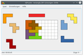
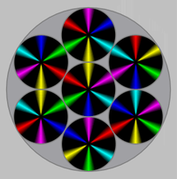

Knobel- und Puzzlespiele
Zum Verständnis dieses Artikels sind folgende Seiten hilfreich:
Puzzle¶
Amoebax¶
Amoebax  ist ein Spiel, welches an den Klassiker Puyo_Puyo erinnert. Die herunterfallenden Amöben müssen nach Farben sortiert werden. Sofern mindestens vier Amöben miteinander verbunden werden kommt es zu einer Kettenreaktion.
ist ein Spiel, welches an den Klassiker Puyo_Puyo erinnert. Die herunterfallenden Amöben müssen nach Farben sortiert werden. Sofern mindestens vier Amöben miteinander verbunden werden kommt es zu einer Kettenreaktion.
Benötigtes Paket:
amoebax
 mit apturl
mit apturl
Paketliste zum Kopieren:
sudo apt-get install amoebax
sudo aptitude install amoebax
blinKen¶
blinKen ist ein KDE-Spiel, welches in den 80er Jahren unter dem Namen Senso (heute: Simon) bekannt war. Es gilt die Folge zu merken in der die Felder (Rot, Gelb, Blau und Grün) blinken. Diese wird dann vom Spieler erneut eingegeben ... Der Schwierigkeitsgrad steigt von Runde zu Runde.
Benötigtes Paket:
blinken (universe)
mit apturl
Paketliste zum Kopieren:
sudo apt-get install blinken
sudo aptitude install blinken
FloboPuyo¶
FloboPuyo ist ein Spiel für zwei Personen. Die herunterfallenden Tropfen müssen nach Farben sortiert werden. Sofern mindestens vier von ihnen miteinander verbunden werden kommt es zu einer Kettenreaktion mit entsprechender Punktevergabe. Das Spielprinzip erinnert an den Klassiker Puyo_Puyo aus dem Jahr 1991.
Benötigtes Paket:
flobopuyo
mit apturl
Paketliste zum Kopieren:
sudo apt-get install flobopuyo
sudo aptitude install flobopuyo
gbrainy¶
gbrainy ist ein Spiel mit Logik-, Rechen- und Gedächtnisaufgaben um das Gehirn zu trainieren. Mehr Informationen findet man im Spieleartikel.
gfpoken¶

Bei GFingerPoken schickt man Bälle durch ein zunächst leerers Gitternetz und versucht an dessen Reaktion Hindernissgegenstände im Gitternetz zu rekonstruieren.
Benötigtes Paket:
gfpoken (universe)
mit apturl
Paketliste zum Kopieren:
sudo apt-get install gfpoken
sudo aptitude install gfpoken
gmult (Multiplizierrätsel)¶

gmult ist ein Rätselspiel, bei dem eine Berechnung bestehend aus Buchstaben vorgegeben ist und der Spieler nun diese durch Zahlen ersetzen muss.
Benötigtes Paket:
gmult (universe)
mit apturl
Paketliste zum Kopieren:
sudo apt-get install gmult
sudo aptitude install gmult
gPlanarity¶
Bei gPlanarity geht es darum, einen Graphen je nach Vorgabe mit verschiedenen Punkten zu ent- bzw. verwirren, welches sich von Level zu Level steigert.
Benötigtes Paket:
gplanarity (universe)
mit apturl
Paketliste zum Kopieren:
sudo apt-get install gplanarity
sudo aptitude install gplanarity
Gweled¶
Gweled ist ein Spiel, welches "Diamond Mine" ähnelt. Um Erfolgreich zu sein, muss man die Diamanten der gleichen Sorte in eine Reihe bringen.
Benötigtes Paket:
gweled (universe)
mit apturl
Paketliste zum Kopieren:
sudo apt-get install gweled
sudo aptitude install gweled

hexalate¶

Bei Hexalate müssen aneinander gereihte Kreise dieselbe Farbabstimmung haben. Mit der Maus werden dabei die Kreise solange bewegt werden, bis sie die gleichen Farben an den Berührungspunkten haben.
Benötigtes Paket:
hexalate (universe)
mit apturl
Paketliste zum Kopieren:
sudo apt-get install hexalate
sudo aptitude install hexalate
KHangMan¶
das bekannte Galgenmännchen als Computerspiele. Mehr Informationen findet man im Artikel KHangMan.
KNetwalk¶
KNetwalk ist "ein Spiel für Systemadministratoren" für KDE - es kann sich aber auch jeder andere darin versuchen, aus dem anfangs gegebenen Kabelgewirr ein funktionierendes Netzwerk zu machen. Da ein Sysadmin aber stets bemüht ist, seine Arbeit effizient zu erledigen, sollte das Netzwerk in möglichst wenigen Zügen eingerichtet werden. Es gibt vier Schwierigkeitsgrade, der Modus "Sehr Schwierig" erscheint zunächst unlösbar, aber man muss nur ein wenig um die Ecke denken.
Kurzbeschreibung: Alle Clients mit dem Server verbinden, mit der rechten und linken Maustaste kann das Kabel gedreht werden.
Benötigtes Paket:
knetwalk (ab Ubuntu 13.04 in universe)
mit apturl
Paketliste zum Kopieren:
sudo apt-get install knetwalk
sudo aptitude install knetwalk
Sudoku¶
Sudoku ist ein Zahlenpuzzle, welches durch Ausschluss und gute Kombinationsgabe zum Ziel führt. Das Spielfeld besteht aus einem Quadrat, welches in neun Blöcke mit jeweils 9 Feldern eingeteilt ist. Damit gibt es insgesamt 81 Felder. Je nach Schwierigkeitsgrad sind mehr oder weniger Zahlen vorgegeben. Andere Variationen wie z.B. eine andere Feldanordnung sorgen für Abwechslung.
Kurzbeschreibung: Beim Spielstart sind in einigen Feldern Ziffern (1-9) eingetragen. Nun müssen die Zeilen, Reihen und Blöcke so ausgefüllt werden, dass in jedem jede Ziffer von 1 bis 9 genau einmal auftritt.
GNOME, Xfce, LXDE, MATE:
gnome-sudoku (universe)
mit apturl
Paketliste zum Kopieren:
sudo apt-get install gnome-sudoku
sudo aptitude install gnome-sudoku
KDE:
ksudoku (universe)
mit apturl
Paketliste zum Kopieren:
sudo apt-get install ksudoku
sudo aptitude install ksudoku
Anschließend können die Programme bei Ubuntu-Varianten mit einem Anwendungsmenü über "Spiele -> Sudoku" bzw. "Spiele -> KSudoku" gestartet werden.
Frühere Version¶
Seit Ubuntu 15.04 ist gnome-sudoku stark abgespeckt worden, z.B. die Funktion "Werkzeuge -> Änderungen markieren" gibt es nicht mehr und die frühere Grafik mag dem ein oder anderen besser gefallen haben. Zusätzlich gibt es einen noch Fehler, durch den das Programmfenster auf kleinen Bildschirmauflösungen nicht komplett dargestellt werden kann.
Wer die Version aus Ubuntu 14.04 nutzen möchte, geht folgendermaßen vor:
In der Datei /etc/apt/sources.list fügt man am Ende folgende Zeile ein:
## Quelle für gnome-sudoku deb http://de.archive.ubuntu.com/ubuntu trusty main
Dann legt man die Datei /etc/apt/preferences.d/gnome-sudoku mit folgendem Inhalt an:
Package: gnome-sudoku Pin: version 1:3.12* Pin-Priority: 1000
Um das so erzeugte Apt-Pinning zu aktivieren, nun noch folgende Befehle ausführen:
sudo apt-get update sudo apt-get -u install gnome-sudoku
Tangram¶
In den offiziellen Paketquellen sind gleich zwei Tangram-Spiele enthalten:
gtans (universe) und
glpeces (universe)
Weitere Informationen sind im Artikel Tangram zu finden.
Tetravex¶
Tetravex ist ein Puzzlespiel. Hier gilt es die vorliegenden Teilen zu einem großen Quadrat anzuordnen. Jedes Puzzleteil ist an den Seiten mit einer Zahl beschriftet und nebeneinanderliegende Seiten die gleiche Zahl aufweisen, damit das Puzzle gelöst werden kann.
Benötigtes Paket:
gnotravex (universe)
mit apturl
Paketliste zum Kopieren:
sudo apt-get install gnotravex
sudo aptitude install gnotravex
Anschließend kann das Programm bei Ubuntu-Varianten mit einem Anwendungsmenü über "Spiele -> Tetravex" gestartet werden.
Tetzle¶
Wer gerne puzzelt und Picsaw zu einfach findet, kann sein Glück mit Tetzle versuchen. Als Puzzlesteine dienen hier die aus dem Spiel Tetris bekannten Formen. Als Vorlage dient ein beliebiges Bild, das in bis zu 972 Tetrominos zerlegt werden kann. Da die Einzelteile teilweise erst gedreht werden müssen, bevor der Zusammenschluss mit anderen Teilen klappt, ist der Schwierigkeitsgrad um einiges höher.
Benötigtes Paket:
tetzle (universe)
mit apturl
Paketliste zum Kopieren:
sudo apt-get install tetzle
sudo aptitude install tetzle
Wer bis einschließlich Ubuntu 12.04 eine Version mit deutscher Programmoberfläche haben möchte, muss das Programm aus dem "Personal Package Archiv" (PPA) des Entwicklers installieren.
xbomb¶
xbomb ist eine Variante des Minesweeper Spieles. Wie im Original gibt es die Optionen Anfänger, Fortgeschritten und Profi. Sie unterscheiden sich in der Spielfeldgröße und den zu suchenden Minen.
Logisches Denken und Kombinieren sind erforderlich, um herauszufinden, hinter welchen Feldern Minen versteckt sind. Der Feind: die Zeit - das Ziel: alle Minen finden...
Benötigtes Paket:
xbomb (universe)
mit apturl
Paketliste zum Kopieren:
sudo apt-get install xbomb
sudo aptitude install xbomb
XWelltris¶
XWelltris ist ein 3D-Tetris und eine Variante des ursprünglich von Alexei Paschitnow programmierten Tetris.
Die herunterfallenden Steine so anordnen, dass sie möglichst ohne Lücken eine Mauer bilden. Sobald eine Reihe komplett ist, wird sie entfernt. So viele Punkte wie möglich sammeln. Man hat erst verloren, wenn die Steine den oberen Spielfeldrand erreicht haben.
Benötigtes Paket:
xwelltris (universe)
mit apturl
Paketliste zum Kopieren:
sudo apt-get install xwelltris
sudo aptitude install xwelltris
Sehr ähnlich ist BlockOut II , das ebenfalls in den offiziellen Paketquellen enthalten ist:
blockout2 (universe)
mit apturl
Paketliste zum Kopieren:
sudo apt-get install blockout2
sudo aptitude install blockout2
 Gesamtübersicht
Gesamtübersicht- Erstellt mit Inyoka
-
 2004 – 2017 ubuntuusers.de • Einige Rechte vorbehalten
2004 – 2017 ubuntuusers.de • Einige Rechte vorbehalten
Lizenz • Kontakt • Datenschutz • Impressum • Serverstatus -
Serverhousing gespendet von